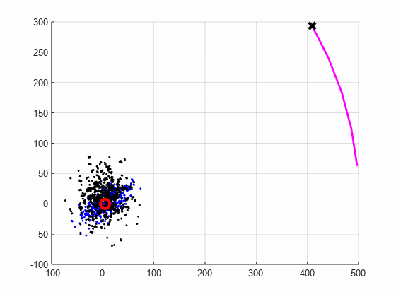

A developmental ladder of kill-gated experiments with pre-registered bars — from symbol-birth on
raw pixels to a governed memory grafted onto a frozen OpenVLA-7B: taught in one typed sentence,
10/10 across a full restart against its twin's 0/10, certified deletion with a forgery caught,
honest refusal with zero false abstains. Two walls published as laws, including a pre-registration
that failed its own bar by one row and stands. Every number is a live-recorded receipt.
frame from the demo film — one sentence names the bowl; the body is never retrained2023 – 26
Ambiguity-Aware Acoustic Target Tracking on the Dragon AUV
Bayesian estimation over hydrophone, sonar, and IMU with explicit ambiguity handling
(multi-hypothesis tracking). Reduced navigation drift 4× over 500 m trajectories. MS thesis work at
the Virginia Tech Center for Marine Autonomy.
code →Dragon AUV during acoustic tracking trials2023 – 26
Distributed Information Fusion for Multi-AUV Tracking
Random-finite-set tracking across a team of AUVs with contact sharing and track-to-track
association — multiple vehicles maintaining one consistent picture of a moving target.

cooperative tracking with contact sharing2023 – 26
Methane Plume Segmentation from 3D Sonar on the 690 AUV
A 3D sonar change-detection pipeline with decision-level fusion into probabilistic octree maps,
for localizing methane seeps on the seafloor.
An essay on giving machines an inner life — why today's models are brilliant amnesiacs, why
honesty must be structural rather than trained, why forgetting needs a receipt, and why the
machine worth building is raised, not manufactured.